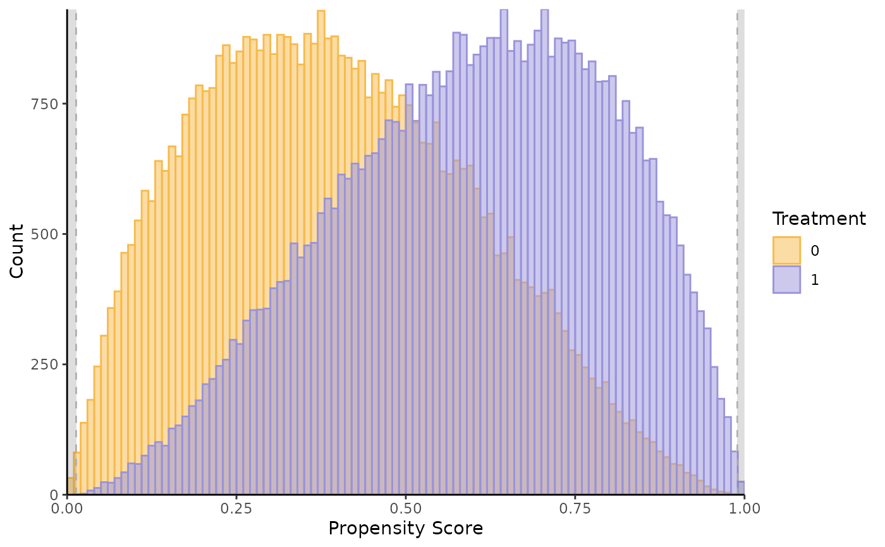

Propensity score support plot
supp_plot_fun.RdReturns the support plot by treatment status of the propensity score Phat included in a dataset.
Examples
# Plot the true common support (with true - unobserved - propensity score)
# Using simulated data.
data(roydata); data=roydata;
# Syntax adjustment to use the function
data$Treatment = factor(data$d)
data$Phat = data$P # P is unobserved, we only know it because simulation here
#common_supp can be determined by looking at the plot - it's not necessary, just a graphical option
supp_P0 = c(min(data$Phat[which(data$d == 0)]), max(data$Phat[which(data$d== 0)]))
supp_P1 = c(min(data$Phat[which(data$d == 1)]), max(data$Phat[which(data$d == 1)]))
common_supp = c(max(supp_P0[1], supp_P1[1]), min(supp_P0[2], supp_P1[2]))
supp_plot = supp_plot_fun(data, common_supp); supp_plot
